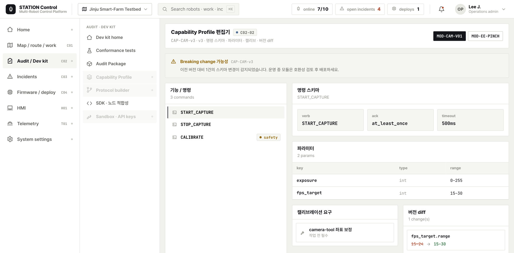
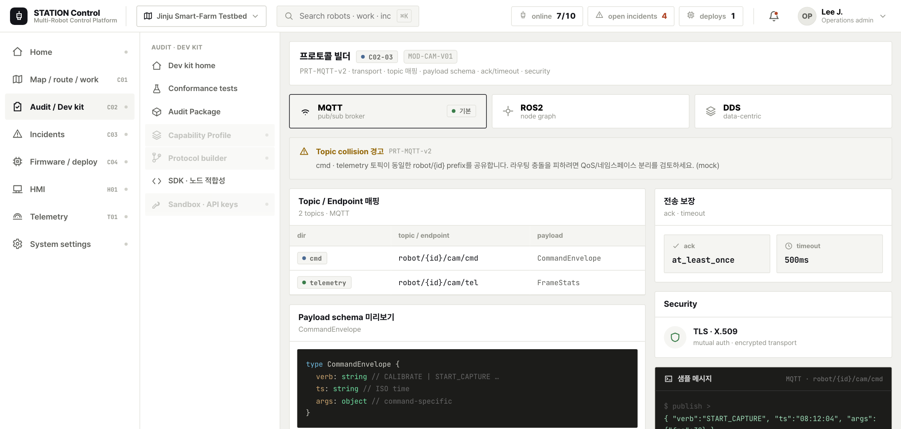
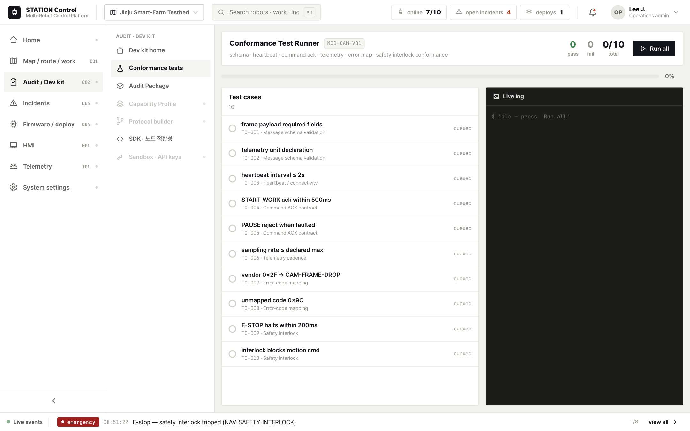
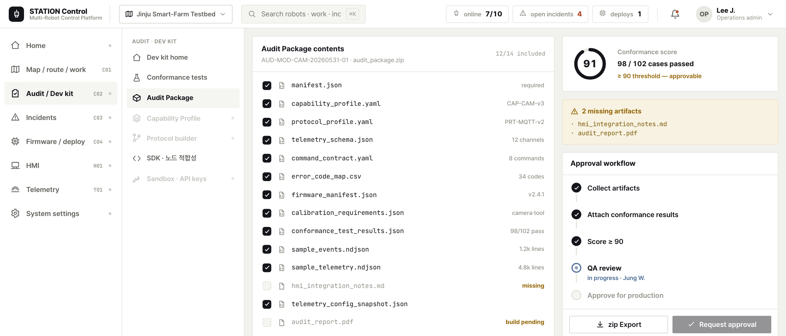

🏢
S1 · 사무실/개발실
산출물 표준 온보딩 — 이음의 출발
컨소시엄 5개 기관이 자기 노드를 표준 계약으로 등록하는 첫 단계다 — ORG-META(VPU·ACU·WorkModule)·ORG-AGE(MCU)·ORG-DAEDONG(LPU)·ORG-KIRO/NAS(EE). 각 기관 노드를 STATION이 "같은 언어로 말하게" 표준 계약으로 등록한다. 여기서는 예시로 ORG-META ACU WorkModule(meta.module.manipulator.v1)를 온보딩하며, 매니페스트의 ownerOrg·attachesToNode가 소유·부착을 박고, 모든 계약은 공유 ID인 module_id 스파인에 묶인다.
1
신규 모듈 제작 완료
기관이 자기 노드(ACU WorkModule/EE 등)를 하드웨어·구동 펌웨어까지 완성한다. 완성된 실물은 아직 "각자의 언어"로만 말하므로, 플랫폼이 알아들을 수 있는 표준 형식으로 능력을 선언해야 한다.
ORG-META ACU WorkModule→Capability Profile→플랫폼 표준
화면: 모듈 온보딩 마법사 (Audit · Dev kit)

2
기관·노드 등록 — module_id 발급
기관(ORG-*)과 노드를 레지스트리에 등록하면 전 계약을 묶는 공유 ID
module_id가 발급된다. 이 ID가 이후 Capability·Protocol·Telemetry·Command·Firmware·Calibration 6종 계약을 하나로 꿰는 스파인이 된다.모듈→module_id 스파인→Module Registry
화면: Module Registry · 기관/노드 등록
3
Capability·Protocol Profile 정의
모듈이 받을 수 있는 명령(commands)·내보낼 텔레메트리(telemetry_schema)·요구 캘리브레이션(calibration_requirements)을 Capability로, transport(MQTT·ROS2·DDS)·topic_map·ack/timeout을 Protocol로 선언한다. 두 계약이 모듈의 "할 수 있는 일"과 "말하는 방식"을 표준 형식으로 고정한다.
모듈 명령·신호→Capability + Protocol→표준 계약
화면: Capability/Protocol Profile 편집기


4
Conformance 테스트 실행
선언한 계약이 실제 모듈과 일치하는지 자동 검증한다 — 스키마 적합성·heartbeat·command ack·error mapping을 항목별로 실행해 통과/실패와 점수를 산출한다. 실패 항목은 그대로 통합 차단 사유가 되므로, 표준화의 실질적 게이트다.
선언 계약→Conformance Suite→검증 결과·점수
화면: Conformance 테스트 러너

5
Audit Package 빌드·승인
계약 정의·테스트 아티팩트·conformance 점수를 묶어 Audit Package로 빌드하고 승인 요청한다. 이 패키지가 한 모듈의 통합을 한 번 검증해 두면, 이후 동일 모듈은 어디서나 같은 방식으로 붙는 반복 가능한 산출물이 된다.
검증 결과→Audit Package→반복 가능 산출물
화면: Audit Package 빌더

6
Module Registry 운영 가능 전환 (G5)
Audit Package가
approved가 되면 모듈은 운영 상태로 전환되어 어떤 조합에도 표준 매칭으로 붙는다. 추가 맞춤 개발 없이 레지스트리에서 곧바로 호출되는 — 통합의 반복성이 확보되는 지점이다.approved Audit→G5 운영 전환→어디서나 조합 가능
화면: Audit 승인 · G5 운영 전환 (모듈 운영 상태)

BLOCKED 운영 전환 차단 — AuditPackage 미승인
AuditPackage 미승인: conformance 92 < 95(임계치) — error mapping 항목 실패로 모듈이 운영 상태로 전환되지 않는다. 승인되지 않은 모듈은 어떤 조합에도 붙을 수 없어, 불완전한 통합이 운영으로 새어 나가는 것을 시스템이 자동 차단한다.
해결: 실패한 conformance 테스트(error mapping)를 수정 후 재실행해 95 이상으로 끌어올리거나, 이슈 보드에 담당자를 지정해 추적·해소한다 → 점수 충족 시 G5 승인 재요청.
→ 다음 단계: S2 · 이기종 펌웨어 통합 검증·배포